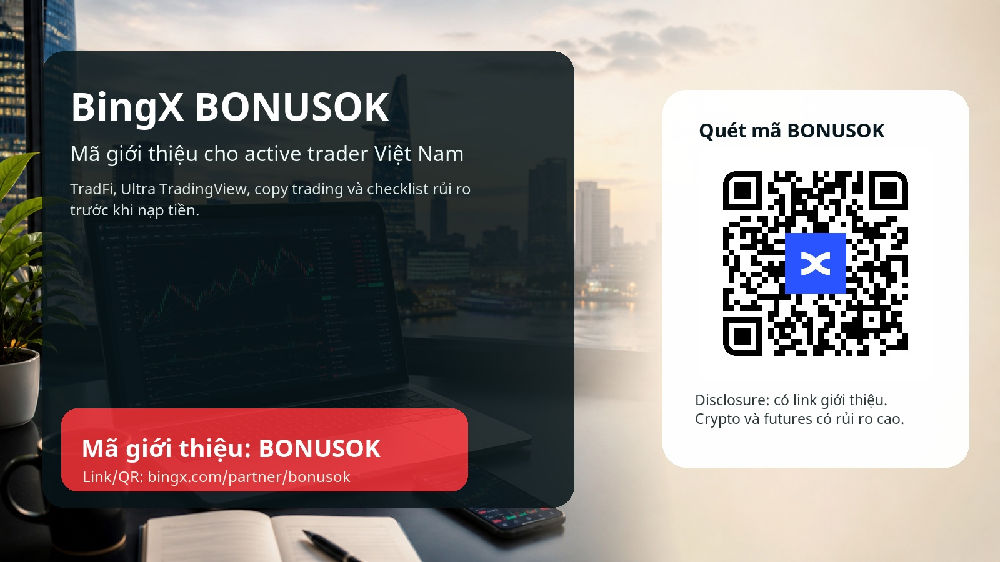

Mã giới thiệu BingX BONUSOK tại Việt Nam: hướng dẫn cho active trader 2026

Câu trả lời nhanh: mã giới thiệu BingX là BONUSOK. Link giới thiệu chính thức: https://bingx.com/partner/bonusok. Trước khi đăng ký hoặc nạp tiền, hãy kiểm tra mã đã được áp dụng, điều kiện bonus, yêu cầu KYC, sản phẩm được phép sử dụng tại Việt Nam, phí giao dịch, rủi ro futures/copy trading và khả năng rút tiền thử.
Minh bạch: bài viết này có link giới thiệu. Chúng tôi có thể nhận hoa hồng nếu bạn đăng ký hoặc giao dịch qua link đó. Cảnh báo rủi ro: crypto, futures, đòn bẩy, copy trading, stock futures và các chương trình thưởng đều có rủi ro cao. Bonus hoặc cashback không đảm bảo lợi nhuận; điều kiện có thể phụ thuộc vào KYC, khu vực, thời gian campaign, khối lượng giao dịch, loại sản phẩm và quy định của BingX.
Vì sao bài này viết cho trader Việt Nam, không chỉ cho người săn bonus
Khi một người tìm mã giới thiệu BingX, mã mời BingX, BingX promo code, BingX bonus code, BingX referral code, BingX copy trading hoặc BingX Vietnam, ý định tìm kiếm thường không giống nhau. Có người chỉ muốn thấy một mã để nhập thật nhanh. Có người đang cân nhắc mở tài khoản mới và muốn biết liệu BingX có phù hợp với cách họ giao dịch hay không. Với chiến dịch referral bền vững, nhóm thứ hai quan trọng hơn nhiều: họ có khả năng hoàn tất KYC nếu cần, hiểu sản phẩm, nạp tiền có kiểm soát, đặt lệnh đầu tiên đúng quy trình, và vẫn còn giao dịch sau 30 hoặc 90 ngày.
Thị trường Việt Nam có nhiều người quan tâm đến crypto, spot, futures, airdrop, copy trading, USDT và P2P. Nhưng chính vì cộng đồng sôi động nên nội dung referral càng phải cẩn thận. Một bài chỉ nói "nhận bonus" dễ tạo click nhanh, nhưng thường không tạo active trader chất lượng. Người dùng có thể nạp tiền vì sợ bỏ lỡ khuyến mãi, mở futures khi chưa hiểu liquidation, copy một lead trader chỉ vì ROI đẹp, hoặc bỏ qua kiểm tra pháp lý địa phương. Kết quả xấu cho cả người dùng lẫn hệ thống referral: nhiều đăng ký, ít người ở lại, và rủi ro khiếu nại cao.
Vì vậy, bài này đặt BONUSOK ở đúng vị trí: một cổng vào, không phải lý do duy nhất để giao dịch. Lý do thật sự để một active trader xem xét BingX trong tháng 6 năm 2026 là bộ sản phẩm đang được đẩy mạnh: post-campaign TradFi context, BingX TradFi, Ultra TradingView cho futures chart, copy trading 2.0 và hệ sinh thái nhiều thị trường. Những điểm này hấp dẫn người đã có kế hoạch giao dịch, nhưng cũng có thể nguy hiểm nếu dùng theo cảm tính.
Điểm mới của BingX có thể thu hút active trader
Điểm mới nổi bật nhất là post-campaign TradFi context được BingX công bố ngày 16 June 2026, với prize pool hơn 1 triệu USD và thời gian campaign từ 15 June đến 4 July 2026. Campaign tập trung vào stock-related products và các tên tuổi quen thuộc như NVIDIA, Micron, Samsung, SK Hynix. Với trader Việt Nam đang theo dõi AI stocks, semiconductor, cổ phiếu Mỹ hoặc biến động sau tin earnings, đây là hook rất mạnh. Nhưng một tên cổ phiếu quen thuộc không làm cho sản phẩm futures trở nên đơn giản. Trader vẫn phải đọc contract specification, margin, phí, spread, liquidity, giờ giao dịch, leverage và quy định khu vực.
Điểm thứ hai là BingX TradFi được tích hợp sâu hơn vào hệ sinh thái. Theo thông báo của BingX, TradFi bao gồm perpetual futures trên commodities, forex, stocks và indices; đồng thời mở rộng sang copy trading, AI tools, spot-market RWA tokens và VIP benefits. Với active trader, một nền tảng có crypto, stock exposure, commodity narrative và copy trading trong cùng một workflow có thể tiết kiệm thời gian. Nhưng nó cũng làm tăng nguy cơ overtrading. Khi mọi thứ nằm trong một app, bạn rất dễ nghĩ rằng mọi cơ hội đều đáng giao dịch.
Điểm thứ ba là Ultra TradingView cho futures chart. BingX mô tả đây là chế độ chart-trading nâng cao, cho phép đặt lệnh nhanh, xem nhãn lệnh, quản lý vị thế, sửa lệnh, đặt take profit/stop loss, đóng hoặc đảo chiều vị thế trực tiếp trên chart. Tính năng này hợp với người cần tốc độ và quy trình rõ ràng. Nhưng chính BingX cũng cảnh báo rằng thao tác trên chart ảnh hưởng trực tiếp đến lệnh và vị thế hiện có; nếu tắt confirmation, một cú chạm sai có thể trở thành lệnh thật. Vì vậy, trong bài này Ultra TradingView không được trình bày như "công cụ kiếm tiền nhanh", mà như một workflow cần kỷ luật.
Điểm thứ tư là copy trading. BingX có tài liệu hướng dẫn copy trading 2.0, bao gồm spot/futures copy trading, sub-accounts, thống kê lead trader, copy ratio, margin mode, leverage, stop-copy, daily loss limits, max allocation và cách tránh các lỗi như slippage hoặc mismatch settings. Đây là sản phẩm có sức hút lớn tại Việt Nam vì nhiều người muốn học theo trader có kinh nghiệm. Nhưng copy trading không phải thu nhập thụ động. ROI quá đẹp, win rate cao hoặc ranking nổi bật không đảm bảo tương lai. Bạn đang nhận rủi ro chiến lược của người khác, nên phải kiểm tra drawdown, lịch sử giao dịch, cách dùng leverage và quy tắc dừng copy.
Bối cảnh Việt Nam: VND, P2P, KYC và khung pháp lý đang thay đổi
Một điểm rất thực tế với người dùng Việt Nam là VND và P2P. BingX từng có thông báo P2P dành cho VND, trong đó quy trình mua USDT yêu cầu hoàn tất KYC, chọn fiat currency VND, chọn phương thức thanh toán, chuyển tiền trên nền tảng bên thứ ba và chờ người bán release crypto. Dù campaign cũ đã qua, thông tin này vẫn cho thấy BingX từng hỗ trợ use case VND/P2P cho người dùng Việt Nam. Tuy nhiên, P2P luôn cần kiểm tra kỹ: tên tài khoản ngân hàng, lịch sử giao dịch, proof of payment, merchant rating, thời gian xử lý, điều khoản tranh chấp và nguồn tiền.
Về pháp lý, Việt Nam đã có bước tiến quan trọng với Luật Công nghiệp công nghệ số 2025, trong đó có nội dung về tài sản số. Các nguồn pháp lý công khai mô tả luật này như một khung pháp lý cho digital assets, virtual assets và crypto assets, đồng thời giao Chính phủ quy định chi tiết về quản lý. Điều này không có nghĩa là mọi sàn quốc tế, mọi sản phẩm futures, mọi campaign hoặc mọi đường P2P đều tự động hợp lệ cho mọi người dùng. Vì vậy, bạn nên xem phần pháp lý như một điểm cần kiểm tra trước khi giao dịch, không phải một lời đảm bảo.
Bài viết này không phải tư vấn pháp lý. Nếu bạn là cư dân Việt Nam, đang giao dịch từ Việt Nam, hoặc dùng ngân hàng Việt Nam để mua USDT, bạn nên kiểm tra luật hiện hành, nghĩa vụ thuế, quy định về tài sản số, điều khoản của BingX và tình trạng sản phẩm trong tài khoản của chính bạn. Nếu platform hiển thị sản phẩm nhưng điều kiện khu vực, KYC hoặc compliance không rõ, hãy hỏi support trước khi nạp tiền lớn.
Cách dùng mã BONUSOK mà không biến bonus thành lý do giao dịch sai
Bước đầu tiên là mở link giới thiệu chính thức: BingX BONUSOK. Nếu form đăng ký có ô referral code, invite code hoặc promo code, hãy kiểm tra BONUSOK xuất hiện trước khi tạo tài khoản. Một số nền tảng không cho gắn mã referral sau khi tài khoản đã được tạo, vì vậy đừng vội.
Bước thứ hai là vào Rewards Hub, Promotion Center hoặc khu vực bonus trong tài khoản để đọc điều kiện. Từ "up to" thường là giới hạn tối đa, không phải số tiền chắc chắn bạn sẽ nhận. Điều kiện có thể gồm KYC, deposit, volume, loại sản phẩm, thời hạn, region và yêu cầu không vi phạm quy tắc. Nếu bonus yêu cầu bạn giao dịch nhiều hơn kế hoạch ban đầu, hãy bỏ qua hoặc giảm quy mô. Bonus tốt nhất là bonus hỗ trợ một kế hoạch đã có; bonus tệ nhất là bonus khiến bạn mở lệnh không có edge.
Bước thứ ba là bảo mật tài khoản. Trước khi nạp tiền, hãy bật 2FA, dùng mật khẩu riêng, kiểm tra email anti-phishing nếu có, lưu seed phrase ví cá nhân ở nơi an toàn, và không nhấp vào link lạ từ Telegram hoặc inbox. Với P2P, chỉ giao dịch trong nền tảng, không hủy lệnh theo yêu cầu của đối phương sau khi đã chuyển tiền, và lưu bằng chứng thanh toán.
Bước thứ tư là test nhỏ. Nạp một số tiền nhỏ, mua một lượng USDT nhỏ nếu cần, đặt một lệnh spot nhỏ, thử rút một phần nhỏ về ví riêng hoặc tài khoản phù hợp. Nếu bạn chưa từng rút tiền, bạn chưa thật sự kiểm tra được đường ra. Active trader chuyên nghiệp không chỉ hỏi "vào lệnh thế nào", mà còn hỏi "thoát lệnh và rút tiền thế nào".
Futures và Ultra TradingView: checklist trước khi đặt lệnh thật
Nếu bạn dùng futures trên BingX, hãy viết bốn thông tin trước khi vào lệnh: entry, invalidation, stop loss và liquidation price. Nếu bạn không biết vị thế sẽ bị thanh lý ở đâu, bạn chưa nên dùng leverage. Nếu stop loss nằm quá gần liquidation, cấu trúc lệnh có vấn đề. Nếu bạn phải tăng leverage để thấy lợi nhuận hấp dẫn, có thể setup của bạn không đủ tốt.
Ultra TradingView giúp bạn thao tác trực tiếp trên chart, nhưng tốc độ không thay thế kỷ luật. Hãy để order confirmation bật trong giai đoạn đầu. Hãy luyện thao tác trên vị thế nhỏ hoặc demo-like size. Hãy dùng chart labels để kiểm tra xem limit orders, trigger orders, trailing stop, take profit và stop loss có đúng nơi bạn muốn không. Một tính năng tốt có thể làm quy trình tốt hơn; nó cũng có thể làm thói quen xấu nhanh hơn.
Một nguyên tắc đơn giản cho trader mới hoặc trader quay lại sau thời gian nghỉ: rủi ro mỗi lệnh nên là số tiền cụ thể, không phải cảm giác. Ví dụ, bạn có thể giới hạn 0.25% đến 1% vốn cho setup đã được kiểm tra, và thấp hơn nhiều cho sản phẩm mới. Nếu thị trường biến động mạnh vì tin tức, earnings hoặc macro data, giảm size thay vì tăng leverage.
Copy trading: cách chọn lead trader mà không bị ROI đánh lừa
Trong copy trading, ROI là điểm bắt đầu để xem, không phải lý do để copy. Bạn cần kiểm tra thời gian hoạt động của lead trader, số lượng lệnh, maximum drawdown, cách dùng leverage, average holding time, tỷ lệ thắng, lợi nhuận sau phí, và phản ứng khi thị trường đi ngược. Một lead trader có lợi nhuận cao trong hai tuần chưa chắc đã phù hợp với vốn của bạn trong ba tháng.
Hãy đặt max allocation trước khi copy. Đừng để một lead trader chiếm phần quá lớn tài khoản. Hãy dùng stop-copy nếu drawdown vượt mức bạn chịu được. Hãy ghi lại lý do chọn trader và lý do dừng copy. Nếu bạn không biết tại sao mình đang copy người đó, bạn cũng sẽ không biết khi nào nên dừng.
Một quy trình 30 ngày có thể như sau: tuần đầu chỉ quan sát; tuần hai copy với size rất nhỏ; tuần ba ghi chép phí, slippage, drawdown, thời gian giữ lệnh; tuần bốn quyết định tăng, giữ nguyên hoặc dừng. Nếu lead trader mở lệnh quá nhiều, dùng leverage vượt khả năng chịu đựng, hoặc thay đổi phong cách không báo trước, hãy giảm exposure.
TradFi, stock futures và narrative AI stocks: hấp dẫn nhưng không đơn giản
Nhiều trader Việt Nam quen theo dõi cổ phiếu Mỹ, AI stocks, semiconductor, vàng, dầu hoặc forex. BingX TradFi có thể làm những narrative này gần hơn với crypto trader. Nhưng stock futures không phải cổ phiếu spot. Bạn không sở hữu cổ phiếu cơ sở theo cách truyền thống; bạn đang giao dịch sản phẩm phái sinh hoặc exposure dựa trên điều khoản của nền tảng. Điều này cần hiểu về margin, funding hoặc phí, spread, liquidity và thời điểm biến động.
post-campaign TradFi context có thể là dịp tốt để học workflow: tạo watchlist, chọn catalyst, đọc contract terms, đánh dấu giờ tin tức, đặt risk limit, rồi mới quyết định có giao dịch hay không. Nếu mục tiêu duy nhất là prize pool, bạn đang để campaign điều khiển hành vi. Nếu mục tiêu là học cách xử lý stock-related products với size nhỏ và journal rõ ràng, campaign có thể trở thành động lực học tập.
7/30/90 ngày sau khi đăng ký: cách biến một click referral thành active trader
Trong 7 ngày đầu, mục tiêu không phải là kiếm nhiều tiền. Mục tiêu là hiểu tài khoản: đăng ký, bảo mật, KYC nếu cần, kiểm tra mã BONUSOK, đọc bonus terms, test nạp/rút nhỏ, đặt lệnh spot nhỏ, xem phí và ghi nhật ký. Nếu có bước nào không rõ, dừng lại.
Trong 30 ngày đầu, mục tiêu là kỷ luật. Mỗi lệnh cần có lý do, risk, entry, stop, exit, phí và bài học. Nếu copy trading, ghi tên lead trader, lý do chọn, max allocation và stop-copy rule. Nếu futures, ghi leverage, margin mode, liquidation price, funding, order type và trạng thái confirmation. Nếu bạn không ghi được, có nghĩa là bạn đang giao dịch quá cảm tính.
Trong 90 ngày, mục tiêu là đánh giá chất lượng. Bạn có còn theo kế hoạch không? Phí và cashback ảnh hưởng thế nào? Bonus có làm bạn giao dịch quá mức không? Copy trader nào nên giữ, ai nên dừng? TradFi hoặc stock futures có thật sự hợp với bạn không? Active trader không được định nghĩa bởi số lệnh nhiều, mà bởi khả năng sống sót sau nhiều chu kỳ thị trường.
Ai nên cân nhắc BingX, ai nên dừng lại trước
BingX có thể phù hợp với người muốn kết hợp crypto spot, futures, copy trading và market narrative rộng hơn như stocks, commodities hoặc indices. Nó cũng phù hợp với người thích theo dõi lead trader nhưng vẫn muốn tự đặt risk controls. Nếu bạn đã có trading journal, hiểu phí và biết cách giảm size khi sản phẩm mới, bạn có thể dùng BONUSOK như một điểm bắt đầu có kiểm soát.
Ngược lại, bạn nên dừng lại nếu chưa hiểu đòn bẩy, chưa từng test rút tiền, không biết liquidation price, nghĩ copy trading là thu nhập thụ động, hoặc muốn nạp thêm chỉ để đạt điều kiện bonus. Trong những trường hợp đó, việc đọc thêm tài liệu, dùng size nhỏ hơn hoặc chỉ quan sát sẽ tốt hơn đăng ký vội.
FAQ
Mã giới thiệu BingX là gì?
Mã giới thiệu là code hoặc link gắn việc đăng ký của bạn với một campaign hoặc partner. Với bài này, code là BONUSOK và link là https://bingx.com/partner/bonusok. Hãy kiểm tra code trước khi nạp tiền.
Người dùng Việt Nam có dùng BingX được không?
Điều này phụ thuộc vào KYC, sản phẩm, region, điều khoản của BingX và quy định địa phương. Bài viết không đảm bảo mọi sản phẩm đều có sẵn hoặc phù hợp cho mọi người dùng Việt Nam. Hãy tự kiểm tra trong tài khoản và hỏi support nếu cần.
Nên bắt đầu bằng copy trading hay futures?
Nếu bạn mới, hãy bắt đầu bằng bảo mật, KYC, nạp/rút nhỏ, spot order nhỏ và journal. Copy trading và futures nên đến sau khi bạn hiểu drawdown, leverage, stop loss và allocation.
BONUSOK có đảm bảo bonus hoặc cashback không?
Không. Bonus và cashback phụ thuộc vào điều kiện thực tế như KYC, deposit, volume, thời gian campaign, region và quy tắc của BingX. Đọc điều kiện trước khi giao dịch.
QR trong bài dẫn tới đâu?
QR đã được decode cục bộ trước khi xuất bản và dẫn tới https://bingx.com/partner/bonusok, trùng với link giới thiệu trong database của chúng tôi. Dù vậy, trước khi đăng ký bạn vẫn nên nhìn lại URL trên trình duyệt.
Nguồn đã kiểm tra
Các nguồn dưới đây được kiểm tra vào 21 June 2026. Link nguồn được giữ sạch, không thêm referral parameter:
- BingX post-campaign TradFi context: https://bingx.com/en/blog/article/bingx-launches-1-million-stock-trading-carnival
- BingX TradFi ecosystem: https://bingx.com/en/blog/article/bingx-tradfi-fully-integrated-into-the-bingx-ecosystem-forming-a-key-pillar
- BingX Ultra TradingView: https://bingx.com/en/support/articles/16293586911503
- BingX Copy Trading guide: https://bingx.com/en/learn/guide/copy-trading
- BingX P2P VND historical support article: https://bingx.com/en/support/articles/22994175798041
- Vietnam Law on Digital Technology Industry reference: https://english.luatvietnam.vn/lawonthedigitaltechnologyindustryno71-2025-qh15datedjune142025ofthenationalassembly-405695-doc1.html